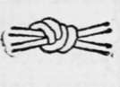
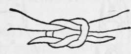
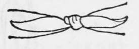
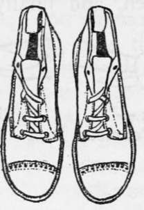
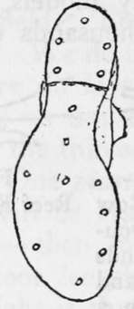

Clothing. Part 5
Description
This section is from the book "Camping And Woodcraft", by Horace Kephart. Also available from Amazon: Camping and Woodcraft.
Clothing. Part 5
Shoes
It is not enough that the shoes be roomy. The lasts over which they are made should be anatomically correct. In 1911 a board of officers of our army was appointed to select a soldier's shoe. They tried many models, instituted thorough marching tests by thousands of men, and finally adopted a shoe made over lasts designed by Surgeon-Major Munson, the well-known expert on military hygiene (Fig. 97). These lasts are straight on the inside, so that the big toe can point straight ahead, as Nature intended. The front is broad enough to give all the toes free play. There is no compression over the ball or arch of the foot. This is the perfect model, easy on one's feet from the word " go".
Fig. 94. True Bow Knot. Double the Ends Back and Tie as in a Reef Knot.
Fig. 95. Reef Knot Formed.
Fig. 96. Reef Knot Drawn Tight.
The army shoe has now been in use, by all arms of the service, long enough to have proved beyond question its merits. Lieutenant Whelan, so well known to us as a sportsman and military authority, says of it: "In the light of what the army now knows, sore feet are absolutely inexcusable. The presence of sore feet in an officer's command is a cause for investigation as to the efficiency of that officer".
To break in a new pair of shoes the soldier stands in about three inches of water for five minutes, then goes for a walk on level ground. When the shoes are not in use, care is taken that they shall not be packed away tightly or otherwise compressed out of the true shape that the breaking in gave them.
At night the shoes are dried by hanging them upside down on stakes before the fire — not too close, for wet leather " burns " easily. Or, fill a frying pan with clean pebbles, heat them (not too hot) over the fire, put them in the shoes, and shake them around after a while. Before the shoes are quite dry, rub just a little neatsfoot oil into them. The remaining dampness prevents the oil from striking clear through, but helps it to penetrate on the outside, as the oil follows the retreating water.
Fig. 97. U. S. Army Shoe.
Fig. 98. Sole of Army Shoe, Showing Proper Method of Placing Hobnails.
The army shoe has a single sole; so it is flexible — a prime desideratum for good walking. The heel is low, broad, and longer than usual, giving firm footing and having less tendency to " run down " than the common pattern of heel. The tongue is loose, making the shoe cool and easy to dry out. There are no hooks to catch in grass and bend out of shape. A pair of these shoes weighs only 2 to 2 1/2 pounds, according to size. This is a proper weight for marching on ordinary roads, but is too light, of course, for rough service, such as a sportsman's shoes often are put to. For the hardscrabble of mountaineering, or going anywhere over sharp rocks or among thorns and saw-briers, the leather is too thin; when it gets wet it goes to pieces.
When buying shoes go to a maker who has made, and kept, a reputation for using none but good leather. There is no severer test of leather than hard usage during frequent wettings and dryings; so, when you find a firm of shoemakers that lumberjacks swear by, trust it to turn you out a good article.
Waterproofed Shoes
The army board decided positively against using any waterproofing compound on shoe leather, because waterproofed shoes steam the feet in perspiration, congest them, and make them tender, if worn for any considerable time, especially in warm weather.
However, it is one thing to march on ordinary roads and another thing to follow wilderness trails or go where there are none at all. And sportsmen often are out in cold slush or wet snow. It is true that no harm comes from wet feet so long as one keeps moving; but if a man has much standing around to do with his feet cold and wet he will suffer discomfort and quite likely catch a cold. Besides, no matter how good the quality of leather may be, when it gets soggy it wears badly. Consequently, although the army shoe is just right for warm weather and marching on roads, it is neither strong enough nor dry enough for continuous wilderness use.
My advice is to get shoes made over the Munson last, of weight suitable for the service in view, and have them viscolized or otherwise waterproofed if you are to be out a good deal in the wet. Have a pair of the regulation army shoes for hot weather and easy going.
No leather is absolutely waterproof. The skin from which it is tanned is porous, and a water proofing preparation only partially fills those pores, making the leather shed water so long as the filling remains intact, but not preventing air and moisture from gradually seeping through. This is as it should be. If the pores were completely and permanently stopped up, the shoe would be as uncomfortable and unhealthful to wear as if made of rubber. All we can reasonably ask is that the shoe shall shed water under marching conditions; not that we may wade or stand in water indefinitely and still keep dry feet.
There are several good waterproofing preparations on the market, to be bought of almost any dealer in sporting goods. If you prefer to make your own, either of the following recipes will do very well. Do not use a mineral oil on shoes: it "burns" leather; but vaseline and paraffine are harmless.
Continue to: